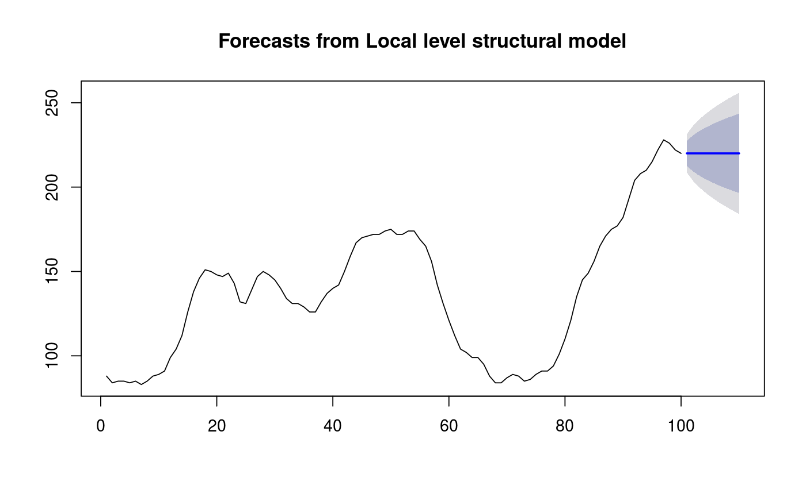

Returns forecasts and other information for univariate structural time series models.
# S3 method for StructTS forecast(object, h = ifelse(object$coef["epsilon"] > 1e-10, 2 * object$xtsp[3], 10), level = c(80, 95), fan = FALSE, lambda = NULL, biasadj = NULL, ...)
| object | An object of class " |
|---|---|
| h | Number of periods for forecasting |
| level | Confidence level for prediction intervals. |
| fan | If TRUE, level is set to seq(51,99,by=3). This is suitable for fan plots. |
| lambda | Box-Cox transformation parameter. If |
| biasadj | Use adjusted back-transformed mean for Box-Cox transformations. If transformed data is used to produce forecasts and fitted values, a regular back transformation will result in median forecasts. If biasadj is TRUE, an adjustment will be made to produce mean forecasts and fitted values. |
| ... | Other arguments. |
An object of class "forecast".
The function summary is used to obtain and print a summary of the
results, while the function plot produces a plot of the forecasts and
prediction intervals.
The generic accessor functions fitted.values and residuals
extract useful features of the value returned by forecast.StructTS.
An object of class "forecast" is a list containing at least the
following elements:
A list containing information about the fitted model
The name of the forecasting method as a character string
Point forecasts as a time series
Lower limits for prediction intervals
Upper limits for prediction intervals
The confidence values associated with the prediction intervals
The original time series
(either object itself or the time series used to create the model
stored as object).
Residuals from the fitted model. That is x minus fitted values.
Fitted values (one-step forecasts)
This function calls predict.StructTS and constructs an object of
class "forecast" from the results.
